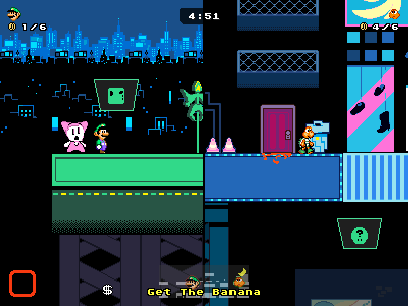
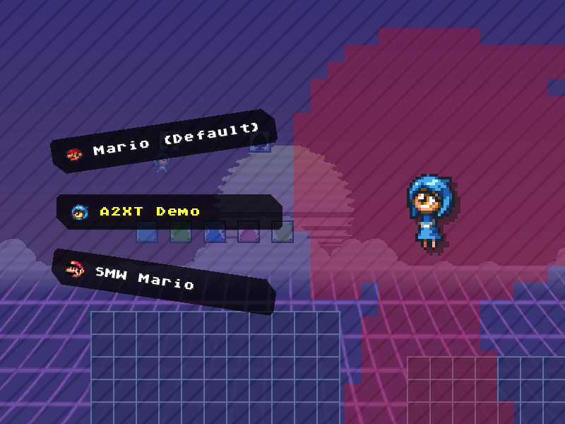

Avoid getting caught by the Phanto! If you do get caught, tag someone else, or you'll lose points!
Added a new game mode, Bombin' Blast.
Grab some bombs and chuck 'em at everyone in sight!
Added a new side mode in the hub, Phanto Collection Co.
A shady company wants as many Phantos as you can manage to get... hey, is killing this number of bosses good for the ecosystem?
This mode can also be played in singleplayer.
Added a new map, Phanto Park.
Adding custom costumes has been made easier, by allowing Battle Arena-specific files to simply be placed into the costume's folder.
A head icon can be added with a file called battleHead.png.
A description, used by the costume menu, can be added with a file called battleDescription.txt.
Data for where to place the sprite of a Phanto being worn can be added with a folder called battleMaskConfig.
Added the option to display a kill feed.
The First-Place Phanto item now has a charge attack.
Players now receive less invincibility time after being stomped on.
Level Changes
The following levels can now be played in Phanto Frenzy:
Airship Ambush,
CYBER WORLD,
Hyrule Temple,
Lethal Lava Level,
New World,
Phanto Park,
Pipe Passage,
Snowball Scuffle,
The Suck,
Woody Warzone
The following levels can now be played in Bombin' Blast:
Airship Ambush,
Battlefort,
Dinosaur Land,
Hyrule Temple,
New World,
Snowball Scuffle,
The Suck,
Woody Warzone
Airship Ambush:
The bottom right corner of the map has been adjusted to make movement easier.
The Burner Beetles are now immune to damage.
When the "Disable Fancy Effects" setting is enabled, the rain effect will now be disabled.
New World:
Blocks being destroyed is now reflected on the minimap.
Halved the amount of time that it takes for blocks to respawn after being destroyed.
Slightly moved one platform down to make it easier to reach.
Blocks can now be destroyed by any explosion rather than just TNT.
Woody Warzone:
Updated the sprites of the Donut Blocks to better reflect them being fully solid.
Fixes
In the level select menu, a level's mode icons may now be split into multiple lines if it is long enough.
The distribution of items from coins is slightly more accurate.
Fixed an oversight where a costume's name would not be displayed correctly if it used "<" or ">" characters.
Fixed a bug with costumes that could happen when carrying over save data from an older version.
Fixed some minor inconsistencies in the outlined version of the main font.
Fixed an issue where rules and team setups would not be correctly set for clients.
Fixed the onWarp event sometimes not triggering.
Fixed explosions from teammates still hurting.
Fixed cases where Link's stab could sometimes hurt teammates.
Fixed an error that could occur when playing Stone Carrier with teams enabled.
Fixed the stone in Stone Carrier sometimes not hurting other players when thrown.
Fixed an issue where, when in a boot, more of a player's sprite could be seen than intended.
Fixed an issue where the NPC being held by a player could desync between clients, resulting in teleporting NPCs.
The following NPCs should now behave better online:
Swinging Platforms
Burners
Countdown Platforms
"Bro" enemies (Hammer Bro, Fire Bro, etc.)
Minor Technical Changes
Items can now be blacklisted in some modes, and can provide a callback function to decide their weighting.
The HUD displaying stars and points is no longer hardcoded to the mode and can be controlled through code.
The battlePlayer.onPlayerHarmCustom and battlePlayer.onPostPlayerHarmCustom events now provide a causeInfo argument, describing the cause type of the damage, player responsible, relevant NPC ID, etc.
battlePlayer.hasHarmImmunity, battlePlayer.hasDeathImmunity, and battlePlayer.getRespawnDuration now exist as exposed functions, for the purpose of potentially being overwritten by custom code.
battleStone.teamPoints has been changed to battlePlayer.teamPoints
NPCs now have different "synchronisation types" that can be used to better control how an NPC is synchronised online.
onlinePlay now has a feature called "join packets", which allows data to be easily synced when a player joins. However, this is mostly irrelevant to custom levels.
v1.2.0 - 2025/06/01


Additions/Changes
Costumes are now player-specific rather than applying to all players of the same character.
As a result of the new costume system, costumes can no longer change the player's hitbox.
Added two new levels: "The Suck" and "CYBER WORLD".
Added . Good luck!
Added a menu for changing costumes.
The minimap is more detailed, now showing the terrain of the level.
Extra information is now displayed on the loading screen before a game.
Added a countdown during the last 10 seconds.
Added an extra piece of hub music.
Added a "mute music" option.
Added "disableMap" and "disableSplitScreen" configs for levels.
Changed the time to vote for a level from 15 seconds to 20.
Netcode Improvements
Clients can now communicate directly with one another rather than having to go through the host. This should result in everything being much more stable when playing with more than two players, and also resolves a lot of host advantage. In some cases, this effectively halves the latency.
Players and NPCs will no longer accept an out-of-order update, which should result in less "jerky" movement.
Player projectiles such as fireballs, hammers, etc. are now attacker-favoured rather than defender-favoured, making them more fair to avoid.
NPCs transforming upon being jumped on (e.g., koopas turning into shells) should now work much more reliably.
Some NPCs (such as the stars in Star Catcher) now use a "fair collection" system which ensures that the correct player gets them.
Made players standing on moving layers appear more stable.
Fixed a bug that would sometimes cause NPCs to not spawn.
Fixed errors and some overall brokeness with lineguided NPCs.
Fixed bombs becoming stuck and constantly making explosion sounds.
Players using warps are now better synced.
Fixes
Fixed a softlock that could occur if someone stops responding before the level select opens.
Fixed an oversight that caused the more descriptive error messages when trying to join a room to never be displayed in practice.
Fixed a bug that could cause onNPCTransform to not run (especially after being frozen), often resulting in extra settings not being initialised properly.
Fixed the player's character and costume changing when joining/leaving an online room.
Fixed the shockwaves of the Stone being able to stun players on the same team and players in statue form.
Fixed how a player's outline is rendered when using a Boo Mushroom.
Fixed the player icons on the HUD not displaying correctly in horizontal split screen.
Fixed a bug that caused the HUD to not display correctly in Recon Mode when seamless wrap was enabled.
v1.1.0 - 2024/09/29
Added team battles. The host can enable and choose teams from the settings menu.
Added a "reserve box enabled" option (enabled by default). This gives Mario and Luigi the ability to hold powerups in reserve, as they normally would.
Added the minPlayers, maxPlayers, unplayableLocally and unplayableOnline configs for levels. These disable the selection of a level if their conditions are not met.
Added a warning when pausing the game by unfocusing the window during online play.
Multiple players in the same room can no longer share a color.
Improved how levels which include a text_english.json file work (there is no longer a risk of this causing forward compatibility issues).
When spectating another player, that player's coin counter is now visible.
Fixed a bug that could cause an "empty player" to appear after a player had disconnected from the room.
Fixed a bug where, online, the start of another player's jump could look weird if they were playing as Peach or Link.
Fixed an error with swinging platforms online.
v1.0.1 - 2024/08/24
Added a "start with mushroom" option.
Fixed an error that would happen when attempting to press a button that was greyed out.
Fixed being able to access the console when playing normally.